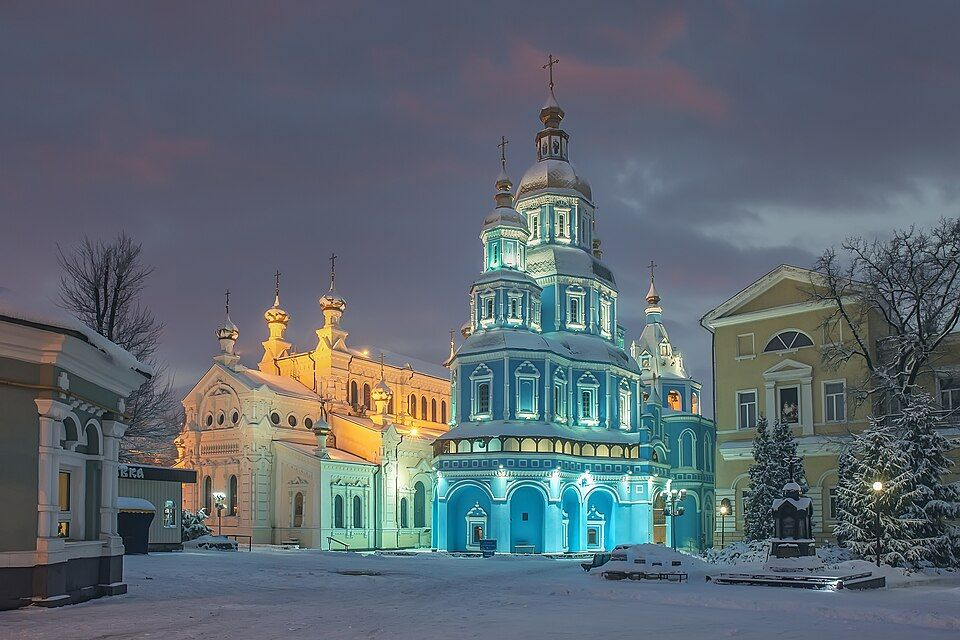
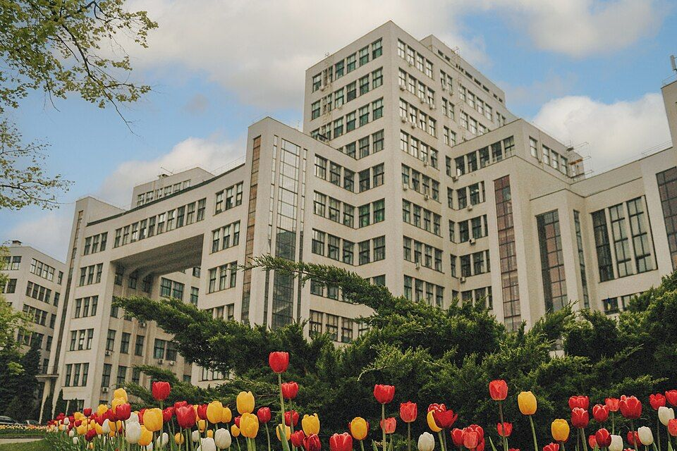
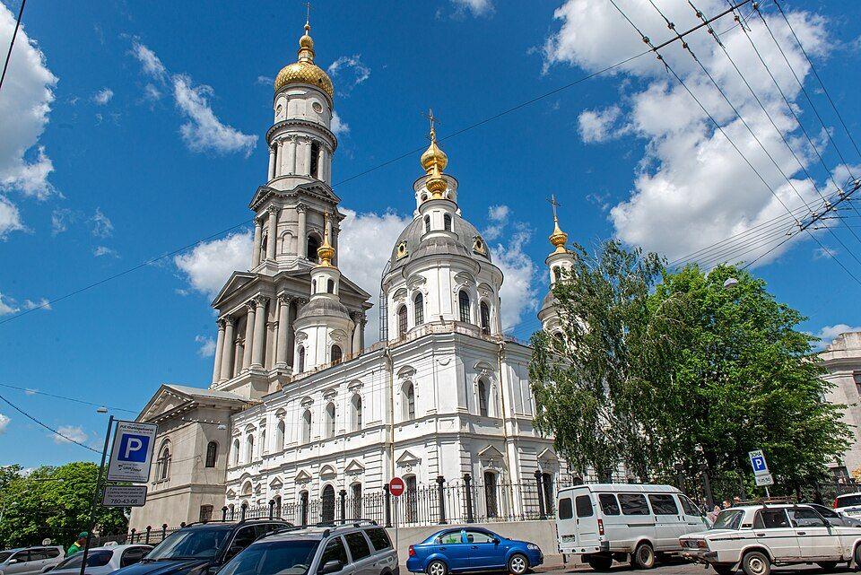
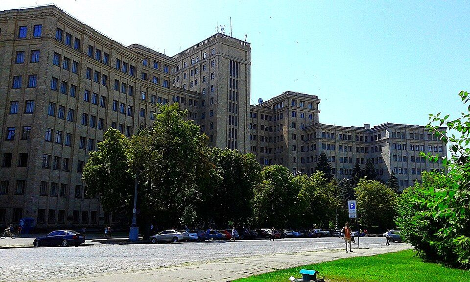

Моє місто
Мій Харків
Місто, яке надихає
Перша столиця, місто студентів, науки й культури. Запрошую на віртуальну прогулянку другим за величиною містом України!
Знайомтеся: Харків
Харків — друге за кількістю населення місто України та адміністративний центр Харківської області. Він розташований на північному сході країни, на пагорбах біля злиття річок Харків, Лопань та Уди. Місто засноване в 1654 році як козацька фортеця, а сьогодні його площа становить 350 км².
За свою історію Харків був центром козацького полку, губернським містом і навіть першою столицею Радянської України. Тут відкрили один з найстаріших університетів країни, працювали видатні науковці, письменники та митці.
Сучасний Харків — великий промисловий, науковий, освітній та IT-центр. Широкі проспекти, затишні парки, пам'ятки архітектури різних епох і особлива енергія студентського міста роблять його неповторним.

Харків у цифрах
Кілька чисел, які допоможуть уявити масштаб міста
1654
рік заснування
350 км²
площа міста
1805
відкрито університет
30
станцій метро
Розділи сайту
Оберіть, з чого почати знайомство з містом


Цікаві факти
Нобелівські лауреати, перший хмарочос, школи в метро та інші дивовижні факти.
Дізнатися більше →
Маршрути
Три прогулянки: історичний центр, архітектура XX століття та зелений Харків.
Обрати маршрут →Чому варто побачити Харків
- Унікальна архітектура — від козацького бароко XVII століття до конструктивізму 1920-х років.
- Майдан Свободи — один з найбільших міських майданів Європи.
- Зелені парки й сади: Сад Шевченка, Центральний парк, лісопарк.
- Багате культурне життя — театри, музеї, концерти й фестивалі.
- Атмосфера студентського міста — молодого, творчого та енергійного.
Як користуватися сайтом
- Прочитайте коротку історію міста.
- Перегляньте визначні місця з фотографіями.
- Дізнайтеся цікаві факти про Харків і відомих харків'ян.
- Оберіть туристичний маршрут і вирушайте на прогулянку!